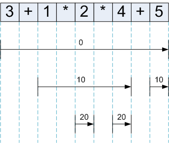

Introduction
Recursive-descent parsers have always interested me, and in the past year and a half I wrote a few articles on the topic. Here they are in chronological order:
- Recursive descent, LL and predictive parsers
- Some problems of recursive descent parsers
- A recursive descent parser with an infix expression evaluator
The third article describes a method that combines RD parsing with a different algorithm for parsing expressions to achieve better results. This method is actually used in the real-world, for example in GCC and Parrot (source).
An alternative parsing algorithm was discovered by Vaughan Pratt in 1973. Called Top Down Operator Precedence, it shares some features with the modified RD parser, but promises to simplify the code, as well as provide better performance. Recently it was popularized again by Douglas Crockford in his article, and employed by him in JSLint to parse Javascript.
I encountered Crockford's article in the Beautiful Code book, but found it hard to understand. I could follow the code, but had a hard time grasping why the thing works. Recently I became interested in the topic again, tried to read the article once more, and again was stumped. Finally, by reading Pratt's original paper and Fredrik Lundh's excellent Python-based piece [1], I understood the algorithm.
So this article is my usual attempt to explain the topic to myself, making sure that when I forget how it works in a couple of months, I will have a simple way of remembering.
The fundamentals
Top down operator precedence parsing (TDOP from now on) is based on a few fundamental principles:
- A "binding power" mechanism to handle precedence levels
- A means of implementing different functionality of tokens depending on their position relative to their neighbors - prefix or infix.
- As opposed to classic RD, where semantic actions are associated with grammar rules (BNF), TDOP associates them with tokens.
Binding power
Operator precedence and associativity is a fundamental topic to be handled by parsing techniques. TDOP handles this issue by assigning a "binding power" to each token it parses.
Consider a substring AEB where A takes a right argument, B a left, and E is an expression. Does E associate with A or with B? We define a numeric binding power for each operator. The operator with the higher binding power "wins" - gets E associated with it. Let's examine the expression:
1 + 2 * 4
Here it is once again with A, E, B identified:
1 + 2 * 4
^ ^ ^
A E B
If we want to express the convention of multiplication having a higher precedence than addition, let's define the binding power (bp) of * to be 20 and that of + to be 10 (the numbers are arbitrary, what's important is that bp(*) > bp(+)). Thus, by the definition we've made above, the 2 will be associated with *, since its binding power is higher than that of +.
Prefix and infix operators
To parse the traditional infix-notation expression languages [2], we have to differentiate between the prefix form and infix form of tokens. The best example is the minus operator (-). In its infix form it is subtraction:
a = b - c # a is b minus c
In its prefix form, it is negation:
a = -b # b has a's magnitude but an opposite sign
To accommodate this difference, TDOP allows for different treatment of tokens in prefix and infix contexts. In TDOP terminology the handler of a token as prefix is called nud (for "null denotation") and the handler of a token as infix is called led (for "left denotation").
The TDOP algorithm
Here's a basic TDOP parser:
def expression(rbp=0):
global token
t = token
token = next()
left = t.nud()
while rbp < token.lbp:
t = token
token = next()
left = t.led(left)
return left
class literal_token(object):
def __init__(self, value):
self.value = int(value)
def nud(self):
return self.value
class operator_add_token(object):
lbp = 10
def led(self, left):
right = expression(10)
return left + right
class operator_mul_token(object):
lbp = 20
def led(self, left):
return left * expression(20)
class end_token(object):
lbp = 0
We only have to augment it with some support code consisting of a simple tokenizer [3] and the parser driver:
import re
token_pat = re.compile("\s*(?:(\d+)|(.))")
def tokenize(program):
for number, operator in token_pat.findall(program):
if number:
yield literal_token(number)
elif operator == "+":
yield operator_add_token()
elif operator == "*":
yield operator_mul_token()
else:
raise SyntaxError('unknown operator: %s', operator)
yield end_token()
def parse(program):
global token, next
next = tokenize(program).next
token = next()
return expression()
And we have a complete parser and evaluator for arithmetic expressions involving addition and multiplication.
Now let's figure out how it actually works. Note that the token classes have several attributes (not all classes have all kinds of attributes):
- lbp - the left binding power of the operator. For an infix operator, it tells us how strongly the operator binds to the argument at its left.
- nud - this is the prefix handler we talked about. In this simple parser it exists only for the literals (the numbers)
- led - the infix handler.
The key to enlightenment here is to notice how the expression function works, and how the operator handlers call it, passing in a binding power.
When expression is called, it is provided the rbp - right binding power of the operator that called it. It consumes tokens until it meets a token whose left binding power is equal or lower than rbp. Specifically, it means that it collects all tokens that bind together before returning to the operator that called it.
Handlers of operators call expression to process their arguments, providing it with their binding power to make sure it gets just the right tokens from the input.
Let's see, for example, how this parser handles the expression:
3 + 1 * 2 * 4 + 5
Here's the call trace of the parser's functions when parsing this expression:
<<expression with rbp 0>>
<<literal nud = 3>>
<<led of "+">>
<<expression with rbp 10>>
<<literal nud = 1>>
<<led of "*">>
<<expression with rbp 20>>
<<literal nud = 2>>
<<led of "*">>
<<expression with rbp 20>>
<<literal nud = 4>>
<<led of "+">>
<<expression with rbp 10>>
<<literal nud = 5>>
The following diagram shows the calls made to expression on various recursion levels:
The arrows show the tokens on which each execution of expression works, and the number above them is the rbp given to expression for this call.
Apart from the initial call (with rbp=0) which spans the whole input, expression is called after each operator (by its led handler) to collect the right-side argument. As the diagram clearly shows, the binding power mechanism makes sure expression doesn't go "too far" - only as far as the precedence of the invoking operator allows. The best place to see it is the long arrow after the first +, that collects all the multiplication terms (they must be grouped together due to the higher precedence of *) and returns before the second + is encountered (when the precedence ceases being higher than its rbp).
Another way to look at it: at any point in the execution of the parser, there's an instance of expression for each precedence level that is active at that moment. This instance awaits the results of the higher-precedence instance and keeps going, until it has to stop itself and return its result to its caller.
If you understand this example, you understand TDOP parsing. All the rest is really just more of the same.
Enhancing the parser
The parser presented so far is very rudimentary, so let's enhance it to be more realistic. First of all, what about unary operators?
As I've mentioned in the section on prefix and infix operators, TDOP makes an explicit distinction between the two, encoding it in the difference between the nud and led methods. Adding the subtraction operator handler [4]:
class operator_sub_token(object):
lbp = 10
def nud(self):
return -expression(100)
def led(self, left):
return left - expression(10)
nud handles the unary (prefix) form of minus. It has no left argument (since it's prefix), and it negates its right argument. The binding power passed into expression is high, since unary minus has a high precedence (higher than multiplication). led handles the infix case similarly to the handlers of + and *.
Now we can handle expressions like:
3 - 2 + 4 * -5
And get a correct result (-19).
How about right-associative operators? Let's implement exponentiation (using the caret sign ^). To make the operation right-associative, we want the parser to treat subsequent exponentiation operators as sub-expressions of the first one. We can do that by calling expression in the handler of exponentiation with a rbp lower than the lbp of exponentiation:
class operator_pow_token(object):
lbp = 30
def led(self, left):
return left ** expression(30 - 1)
When expression gets to the next ^ in its loop, it will find that still rbp < token.lbp and won't return the result right away, but will collect the value of the sub-expression first.
And how about grouping with parentheses? Since each token can execute actions in TDOP, this can be easily handled by adding actions to the ( token.
class operator_lparen_token(object):
lbp = 0
def nud(self):
expr = expression()
match(operator_rparen_token)
return expr
class operator_rparen_token(object):
lbp = 0
Where match is the usual RD primitive:
def match(tok=None):
global token
if tok and tok != type(token):
raise SyntaxError('Expected %s' % tok)
token = next()
Note that ( has lbp=0, meaning that it doesn't bind to any token on its left. It is treated as a prefix, and its nud collects an expression after the (, right until ) is encountered (which stops the expression parser since it also has lbp=0). Then it consumes the ) itself and returns the result of the expression [5].
Here's the code for the complete parser, handling addition, subtraction, multiplication, division, exponentiation and grouping by parentheses:
import re
token_pat = re.compile("\s*(?:(\d+)|(.))")
def tokenize(program):
for number, operator in token_pat.findall(program):
if number:
yield literal_token(number)
elif operator == "+":
yield operator_add_token()
elif operator == "-":
yield operator_sub_token()
elif operator == "*":
yield operator_mul_token()
elif operator == "/":
yield operator_div_token()
elif operator == "^":
yield operator_pow_token()
elif operator == '(':
yield operator_lparen_token()
elif operator == ')':
yield operator_rparen_token()
else:
raise SyntaxError('unknown operator: %s', operator)
yield end_token()
def match(tok=None):
global token
if tok and tok != type(token):
raise SyntaxError('Expected %s' % tok)
token = next()
def parse(program):
global token, next
next = tokenize(program).next
token = next()
return expression()
def expression(rbp=0):
global token
t = token
token = next()
left = t.nud()
while rbp < token.lbp:
t = token
token = next()
left = t.led(left)
return left
class literal_token(object):
def __init__(self, value):
self.value = int(value)
def nud(self):
return self.value
class operator_add_token(object):
lbp = 10
def nud(self):
return expression(100)
def led(self, left):
right = expression(10)
return left + right
class operator_sub_token(object):
lbp = 10
def nud(self):
return -expression(100)
def led(self, left):
return left - expression(10)
class operator_mul_token(object):
lbp = 20
def led(self, left):
return left * expression(20)
class operator_div_token(object):
lbp = 20
def led(self, left):
return left / expression(20)
class operator_pow_token(object):
lbp = 30
def led(self, left):
return left ** expression(30 - 1)
class operator_lparen_token(object):
lbp = 0
def nud(self):
expr = expression()
match(operator_rparen_token)
return expr
class operator_rparen_token(object):
lbp = 0
class end_token(object):
lbp = 0
Sample usage:
>>> parse('3 * (2 + -4) ^ 4')
48
Closing words
When people consider parsing methods to implement, the debate usually goes between hand-coded RD parsers, auto-generated LL(k) parsers, or auto-generated LR parsers. TDOP is another alternative [6]. It's an original and unusual parsing method that can handle complex grammars (not limited to expressions), relatively easy to code, and is quite fast.
What makes TDOP fast is that it doesn't need deep recursive descents to parse expressions - only a couple of calls per token are required, no matter how the grammar looks. If you trace the token actions in the example parser I presented in this article, you'll notice that on average, expression and one nud or led method are called per token, and that's about it. Fredrik Lundh compares the performance of TDOP with several other methods in his article, and gets very favorable results.

| [1] | Which is also the source for most of the code in this article - so the copyright is Fredrik Lundh's |
| [2] | Like C, Java, Python. An example of a language that doesn't have infix notation is Lisp, which has prefix notation for expressions. |
| [3] | This tokenizer just recognizes numbers and single-character operators. |
| [4] | Note that to allow our parser actually recognize -, an appropriate dispatcher should be added to the tokenize function - this is left as an exercise to the reader. |
| [5] | Quiz: is it useful having a led handler for a left paren as well? Hint: how would you implement function calls? |
| [6] | By the way, I have no idea where to categorize it on the LL/LR scale? Any ideas? |